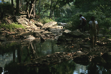
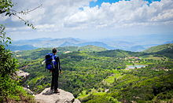

Informações técnicas sobre relevo, população, IDH etc.
| INFORMAÇÕES | |
|---|---|
| Municípios limítrofes | Norte: Pacoti e Palmácia; Sul: Mulungu; Leste: Pacoti e Baturité; Oeste: Caridade e Mulungu |
| Emancipação | 22 de setembro de 1957 (63 anos) |
| Área total | 59 km² |
| Clima | Tropical superúmido |
| IDH | 0,637 — médio |
| PIB | R$ 33 589 mi |
| INFORMAÇÕES TERRITORIAIS | |
|---|---|
| Número de habitantes | 5 193 habitantes |
| Superfície de Guaramiranga |
10 086 hectares
100,86 km² (38,94 sq mi) |
| Densidade populacional | 51,5 ha./km² |
| Altitude de Guaramiranga | 798 metros de altitude |
| Coordenadas geográficas decimais |
Latitude:
-4.27139
Longitude: -38.9462 |
| Coordenadas geográficas sexagesimais | Latitude: 4° 16' 17'' Sul , Longitude: 38° 56' 46'' Oeste |
| INFORMAÇÕES DO MUNICÍPIO | |
|---|---|
| Endereço da Prefeitura Municipal de Guaramiranga |
Fortaleza
Prefeitura de Guaramiranga
Rua Joaquim Alves Nogueira,409 GUARAMIRANGA - CE, 62766-000 Brasil Work +55 85 3321-1159 Fax +55 85 3321-1133 |
| Telefone da prefeitura |
(85)3321-1159
Internacional: +55 85 3321-1159 |
| Fax |
(85) 3321-1133
Internacional: +55 85 3321-1159 |
| Endereço electrónicoda prefeitura |
delanobarrozo@gmail.com
|
| Site oficial do município | < href="https://www.guaramiranga.ce.gov.br" rel="noopener" target="_blank" title="Website do município"> guaramiranga.ce.gov.br |
| INFORMAÇÕES DO ADMINISTRATIVAS | ||
|---|---|---|
| Prefeito de Novo Oriente | ROBERLANDIA FERREIRA CASTELO BRANCO | |
| Partido politico | PDT | |
| INFORMAÇÕES DE TRANSPORTE | |
|---|---|
| Transporte urbano disponível | - |
| Aeroporto |
Aeroporto Internacional Pinto Martins
71.8 km
Aeroporto de Sobral
167.9 km
Aeroporto Dix-Sepet Rosado
203.8 km
|
| INFORMAÇÕES DE DISTÂNCIA A OUTRAS CIDADES | ||
|---|---|---|
| São Paulo : 2300 km | Rio de Janeiro : 2124 km | Brasília : 1615 km |
| Salvador : 864 km | Belo Horizonte : 1814 km | Manaus : 2345 km |
| Curitiba : 2601 km | Fortaleza : 76 km mais perto | Goiânia : 1872 km |
| Belém : 1108 km | Porto Alegre : 3145 km | Guarulhos : 2278 km |
| Campinas : 2251 km | São Luís : 626 km | Recife : 616 km |
| Distância calculada em linha reta! | ||
Conheça mais sobre a história de Guaramiranga.
Guaramiranga é um município brasileiro do estado do Ceará. Está localizado na região serrana do estado, a 105,5 km da capital do estado, Fortaleza. Segundo estimativa de 2019 do IBGE, o município tem cerca de 5.193 habitantes e 59 km² de área. Sua sede se localiza a 865 metros de altitude. A cidade está situada na Área de Proteção Ambiental da Serra de Baturité.
O município se destaca como destino turístico pelo clima ao longo do ano, rica fauna, movimentada cena artística e importantes construções históricas. É um dos municípios com menor média anual de temperatura da Região Nordeste. Faz parte do Polo da Serra de Guaramiranga.
É a terra natal do cientista cearense Fernando de Mendonça, um dos pais do Programa Espacial Brasileiro, que trabalhou como representante do Brasil junto à NASAce foi o primeiro diretor do INPE; além de terra natal, também, do jurista José Linhares, ex-presidente da República.
As terras da atual Guaramiranga eram habitadas por várias etnias. A principal delas era a Kanyndé. Com a criação da Missão da Palma, durante o século XVIII, para a evangelização dos silvícolas, e a expansão da pecuária e as plantações de café no século XIX, consolidou-se o centro urbano que hoje se chama Guaramiranga.
Saiba mais sobre os melhores lugares e o que fazer em Guaramiranga
O turismo representa um forte componente da economia do município, graças a atrativos como o clima serrano, belas paisagens e eventos acolhidos durante todo o ano, como o Festival de Jazz e Blues.
Guaramiranga é um dos mais disputados destinos de carnaval dos cearenses, pois oferece opção para aqueles que preferem ficar longe do forró e do axé, que normalmente são dominantes no litoral do estado. Nesse período, a cidade abriga o Festival de Jazz e Blues de Guaramiranga – evento que conta com a participação de grandes nomes da música nacional e internacional. Nas noites frias da pequena cidade, a música entretém uma multidão de apreciadores, que lotam as ruas e hospedagens, muitas vezes improvisando barracas de acampamento e casas alugadas por moradores.
Além das atrações culturais, Guaramiranga é conhecida pelos atrativos naturais. Por estar localizada no Maciço de Baturité, região serrana a 865 metros acima do nível do mar, as temperaturas são amenas, geralmente entre 16 e 25º, embora, no mês de julho, a temperatura possa atingir 12°C. Por essas condições climáticas, é popularmente conhecida como “suíça cearense”.A vegetação é composta de mata atlântica. Guaramiranga é conhecida também por “cidade das flores”. A origem desse título reside na tradição do cultivo de rosas no Maciço de Baturité.
Os prédios históricos e seu valor histórico são outra característica do município. A Pousada dos Capuchinhos, antes um mosteiro, é um dos principais pontos turísticos da cidade, mesmo para aqueles que não estejam lá hospedados; Os cantos gregorianos são tradição, entoados nas manhãs do antigo prédio religioso. A beleza do antigo mosteiro se estende, ainda, por seus jardins e fontes.
As trilhas ecológicas são uma forte atração da região. Há, ainda, a Cachoeira do Perigo, localizada em Baturité.
Nas rotas turísticas de Guaramiranga há também o Pico Alto, local de maior altitude no Maciço de Baturité, com 1115 metros, e, consequentemente, de menores temperaturas, que podem chegar a 10°C em julho. Lá existe, ainda, um mirante onde os visitantes podem ver o pôr do sol. Juntamente com as cidades de Palmácia, Pacoti, Mulungu e Aratuba, faz parte da Rota Turística Serra de Guaramiranga.

Veja como chegar nos melhores pontos de Guaramiranga
SAIBA COMO CHEGAR ATÉ GUARAMIRANGA!